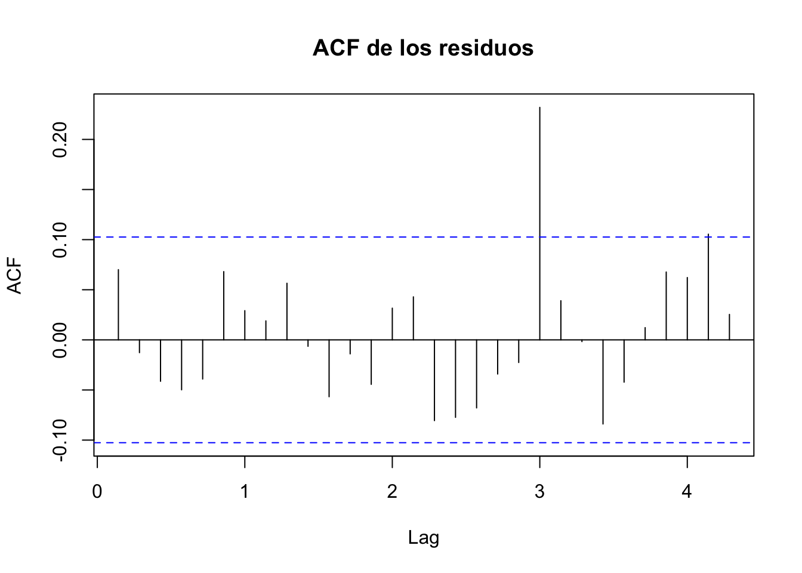
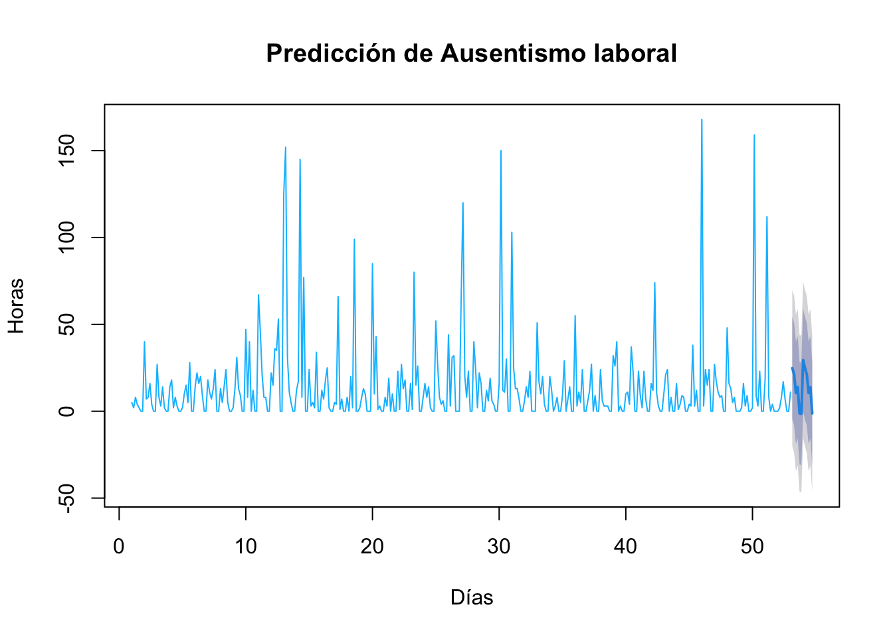

Capítulo 4 Modelo ARIMA
El modelo ARIMA (AutoRegressive Integrated Moving Average) es una herramienta estadística utilizada para modelar y predecir series de tiempo univariadas. Su nombre proviene de los tres componentes principales que lo conforman:
- AR (AutoRegresivo): Indica que la variable dependiente se explica por sus propios valores pasados.
- I (Integrado): Se refiere al número de diferenciaciones necesarias para que la serie se vuelva estacionaria.
- MA (Media Móvil): Representa la dependencia entre el valor actual de la serie y los errores residuales pasados.
El modelo ARIMA se denota como ARIMA (p, d, q), donde:
- p: número de términos autorregresivos (AR).
- d: número de diferencias requeridas para hacer estacionaria la serie.
- q: número de términos de media móvil (MA).
Para que un modelo ARIMA sea válido, es necesario que se cumplan ciertos supuestos fundamentales. En primer lugar, la serie de tiempo debe ser estacionaria, lo que implica que sus propiedades estadísticas, como la media, la varianza y la covarianza, se mantengan constantes a lo largo del tiempo. En caso de que la serie no sea estacionaria, debe poder transformarse en una serie estacionaria mediante procedimientos como la diferenciación. En segundo lugar, se requiere que los residuos del modelo —es decir, las diferencias entre los valores observados y los estimados— se comporten como ruido blanco. Esto significa que deben ser aleatorios, con media cero, varianza constante y sin correlación entre ellos. El cumplimiento de estos supuestos es esencial para garantizar la validez de las inferencias y pronósticos derivados del modelo ARIMA.
Partiendo de los resultado del capítulo 2, se estableció que la serie de tiempo asociada al caso de ausentismo es estacionaria según el resultado del test Dickey-Fuller. A continuación se aplica el modelo Arima
## Series: ts_diaria
## ARIMA(0,0,0)(0,0,2)[7] with non-zero mean
##
## Coefficients:
## sma1 sma2 mean
## 0.0992 0.1259 13.9487
## s.e. 0.0564 0.0534 1.5605
##
## sigma^2 = 603.5: log likelihood = -1685.04
## AIC=3378.08 AICc=3378.19 BIC=3393.68Se requiere que los residuos del modelo —es decir, las diferencias entre los valores observados y los estimados— se comporten como ruido blanco. Esto significa que deben ser aleatorios, con media cero, varianza constante y sin correlación entre ellos. El cumplimiento de estos supuestos es esencial para garantizar la validez de las inferencias y pronósticos derivados del modelo ARIMA.
Para comprobar si los residuos de un modelo ARIMA aplicado a ausentismo laboral, se comportan como ruido blanco se grafican los residuos y la función de autocorrelación ACF, como se muestra a continuación.
residuos <- residuals(modelo_arima)
plot(residuos, main = "Residuos del modelo ARIMA", ylab = "Residuos")

## [1] 63
## Point Forecast Lo 80 Hi 80 Lo 95 Hi 95
## 53.14286 24.809061 -4.67089562 54.28902 -20.27664 69.89476
## 53.28571 21.308872 -8.17108486 50.78883 -23.77683 66.39458
## 53.42857 10.533910 -18.94604760 40.01387 -34.55179 55.61961
## 53.57143 13.827451 -15.65250608 43.30741 -31.25825 58.91316
## 53.71429 -1.257420 -30.73737741 28.22254 -46.34312 43.82828
## 53.85714 -1.495569 -30.97552647 27.98439 -46.58127 43.59014
## 54.00000 29.431127 -0.04883144 58.91109 -15.65458 74.51683
## 54.14286 24.809061 -4.67089710 54.28902 -20.27664 69.89477
## 54.28571 21.308872 -8.17108633 50.78883 -23.77683 66.39458
## 54.42857 10.533910 -18.94604908 40.01387 -34.55180 55.61962
## 54.57143 13.827451 -15.65250755 43.30741 -31.25826 58.91316
## 54.71429 -1.257420 -30.73737889 28.22254 -46.34313 43.82829plot(pred, main=" ", ylab="Horas", col="deepskyblue", xlab="Días")
title(main="Predicción de Ausentismo laboral")
## Warning in locate.outliers.iloop(resid = resid, pars = pars, cval = cval, :
## stopped when 'maxit.iloop' was reached
## Warning in locate.outliers.iloop(resid = resid, pars = pars, cval = cval, :
## stopped when 'maxit.iloop' was reached## Warning in locate.outliers.oloop(y = y, fit = fit, types = types, cval = cval,
## : stopped when 'maxit.oloop = 4' was reached
.